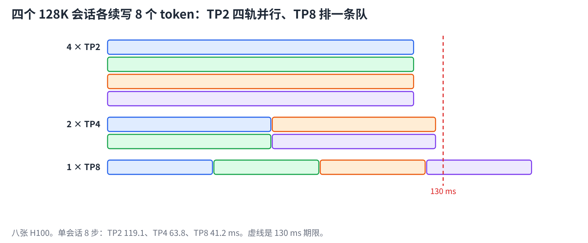
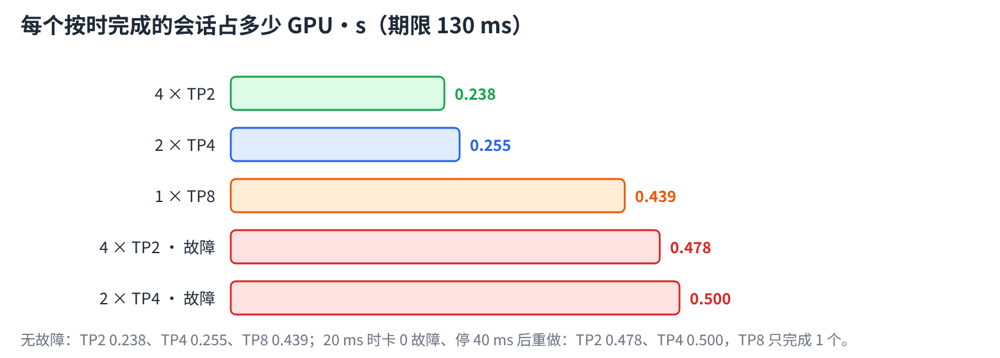
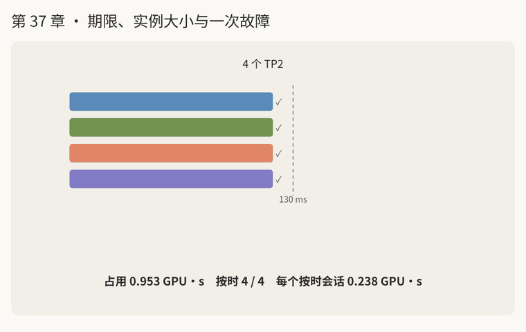

第 37 章 · 从并行方案到超节点规模：按期限、成本和故障挑方案
本地运行
git clone https://github.com/wikieden/ai-infra-from-constraints
cd ai-infra-from-constraints/code/notebooks
pip install jupyterlab torch numpy
jupyter lab ch37_scale_choice.ipynb也可以下载后直接用 VS Code 打开 .ipynb 运行。需要 GPU 的章节在 Colab 里选「代码执行程序 → 更改运行时类型 → GPU」。
本章回答：八张卡跑四个 128K 会话，是四个两卡实例、两个四卡实例还是一个八卡实例？算上成本和一次卡故障，答案会不会变？给定模型和硬件，选切分方案的一般步骤是什么？超节点放大、权重进 ROM，各换来了什么？
讲解日期：2026-11-24 · 上一章：第 36 章 超节点的物理组织与内存池 · 下一章：第 38 章 从超节点走向集群
对应原文：materials/ai-infra-book/manuscripts/06-超节点.md§6.7 L883–L1102（式 6-13 到 6-15，图 6-47 到 6-56）；§6.7.4 V4.1 Flash 综合算例略讲
本章缩写：SLO = Service Level Objective（服务 / 水平 / 目标）· GPU·s = 一张卡占用一秒 · Engram = DeepSeek V4.1 的查表模块。全部缩写见 缩写与术语表
讲解
第一步：大协作组还是多实例（2026-11-24）
类比：四桌客人，八个厨师。 两人一组开四个灶，四桌同时上菜；八人围一个灶，第一桌最快，但另外三桌要排队。
原文 L887–L920：一台 HGX H100，四个 Qwen3-32B 会话都已有 131,064 个 token，各续写 8 个 token；一个实例一次服务一个会话，按实例轮转。每步时间用第 32、35 章的 \(T(p)\)：
| 部署 | 一个会话 8 步 | 四个会话完成 | 全部完成 |
|---|---|---|---|
| 八个 TP1 | 放不下 | — | — |
| 四个 TP2 | 119.1 ms | 119.1 × 4 | 119.1 ms |
| 两个 TP4 | 63.8 ms | 63.8、63.8、127.6、127.6 | 127.6 ms |
| 一个 TP8 | 41.2 ms | 41.2、82.4、123.5、164.7 | 164.7 ms |

图 37-1 · 横向长度是单会话时间，纵向轨道数是能同时推进的会话。虚线是 130 ms 期限。
- 单会话 50 ms 期限：只有 TP8 满足（41.2 ms）。
- 四会话 130 ms 全部完成：TP2、TP4 都满足，TP2 更早。
- 两台服务器的 TP16（6.67 ms/步，8 步 53.3 ms）连 50 ms 都达不到：第二台服务器更适合跑别的实例。
一句话：模型内并行缩短单会话，多实例并发推进多会话；两者抢的是同一批卡，按期限选。
第二步：按"每个按时完成的会话"算成本，再加一次故障（2026-11-24）
类比：包车送客。 车费按包车时间算，摊到准时送达的客人头上；路上抛锚，车费照算，迟到的客人不算数。
原文 L928–L960（式 6-13）：
八张卡从四个会话到达起计费到全部完成，期限 130 ms，至少 75% 按时：
| 部署 | 占用 | 按时会话 | 每个按时会话 | 一次卡故障后 |
|---|---|---|---|---|
| 四个 TP2 | 0.953 GPU·s | 4 | 0.238 | 0.478（3 个按时） |
| 两个 TP4 | 1.021 | 4 | 0.255 | 0.500（3 个按时） |
| 一个 TP8 | 1.318 | 3 | 0.439 | 130 ms 内只完成 1 个 |
故障：20 ms 时卡 0 失效，所在实例停 40 ms，60 ms 起从该会话开头重做；其他实例不受影响。小实例把故障隔离在一个会话里，但成本仍翻倍；八卡实例一出故障全队都晚。共用电源或交换机的实例会一起受影响，拆分要配合资源隔离。

图 37-2 · 能耗同理：10.2 kW 下 TP2 用 1.21 kJ、TP4 用 1.30 kJ，越早完成越省电。
容量和时间各排除谁：128K 时 TP1 被容量排除（102.03 GB）；32K 时 TP1 放得下，但 8 步要 173.3 ms，被期限排除；TP2 约 88.3 ms，每个按时会话约 0.177 GPU·s。
一句话：成本 = 占用时间 ÷ 按时完成数；故障、重做、超时都进分子，故障范围由实例大小和共用设备决定。
第三步：给定模型和硬件，怎么选切分（2026-11-24）
类比：配菜单。 先列食材和忌口（模型、负载、硬件），再按问题挑做法，写出每道菜的步骤和时间，按同一个标准比，最后试吃修正。
原文 L976–L1014：
- 记录：模型（层、矩阵、头与 KV 头、专家、精度、共享状态）、负载（prefill 长度、上下文、就绪请求、路由、目标延迟）、硬件（每卡 HBM、有效算力和带宽、节点内外路径和启动开销）。不能把集群总带宽平均分给每个通信组。
- 按瓶颈列方案：
| 瓶颈 | 先考虑 | 要补算 |
|---|---|---|
| 权重放不下 / 小 batch 重复读权重太慢 | TP、PP；MoE 用 EP | 归约、阶段串行、专家流量 |
| 独立请求多、模型已能放下 | 更多 DP 副本、较小 TP | 排队、每副本 KV 容量 |
| 逐 token 激活重复存 | TP 组内开 SP | 边界的收集与归约 |
| 长上下文 KV 与注意力主导 | CP + TP | K、V 交换、因果负载不均 |
| 层多、跨节点归约贵 | 节点内 TP + 跨节点 PP | micro-batch 够不够、最慢阶段 |
| 专家多、路由热点突出 | EP、专家副本、专家分离 | 两个方向的流量、最忙的卡 |
- 写数据归属和时间表：每卡存什么，峰值内存再加通信缓冲、双缓冲、在途 micro-batch；按依赖排时间线；MoE 代最忙组而不是平均。
- 在可行方案中按同一目标排序。
- 用测量修正：差距小于测量波动的方案都保留；交付时写清被排除的方案和会让结论翻转的阈值。
敏感性：八卡小数据时，NVLink 带宽翻倍只省约 2.5 μs，每轮启动开销减半省约 0.74 ms：先减启动开销。
一句话：先按容量和依赖划出可行集，再按瓶颈列候选，写出时间表按同一目标比，最后用测量修正排名。
第四步：超节点放大与权重进 ROM（V4.1 Flash，略讲）（2026-11-24）
类比：仓库扩建。 仓库大了能存更多货、同时接更多单（吞吐），但单个快递从下单到送达并不会更快。
超节点大小（原文 L1018–L1042，式 6-14）：DeepSeek V4.1 Flash、200K 上下文 decode，256 张 H100，实例 = 一个超节点。每卡权重 \(9.5 + (288.8 + 203.1)/S\) GB，剩余 HBM 都给 KV（每会话 180.7 MB）：
| 超节点 | 每卡权重 | 每卡会话 | 步时间 | 每卡吞吐 |
|---|---|---|---|---|
| 8 卡 | 71.0 GB | 37 | 14.1 ms | 2,632 token/s |
| 64 卡 | 17.2 GB | 335 | 17.3 ms | 19,420 token/s |
| 256 卡 | 11.5 GB | 367 | 18.9 ms | 19,378 token/s |
8 → 64 卡吞吐提高 7.4 倍，主要来自容量；再大就没收益。单用户速度与超节点大小无关（batch 1 都是 362 token/s）。同样 64 卡分散在八台服务器上，dispatch / combine 有 7/8 要过网卡，通信 3.7 → 29.2 ms，每卡吞吐降到 7,828。
权重进 ROM（原文 L1044–L1068，式 6-15）：权重读取从 2.7 ms 降到 69 μs，但 80 次片上 AllReduce 仍要 159 μs，占每 token 的 65%（4,070 token/s）；58 张 B200 张量并行通信更是 562 μs、占 76%。权重读取不再最长时，单用户速度由集合通信的跳数和每跳延迟决定。
Engram 表和 KV 放哪（原文 L1070–L1088）：203.1 GB 的只读查表，每 token 只查 12.7 KB，下一步要查哪些行一开始就知道：H100 上放主机内存预取（不占 HBM，8 卡每卡会话 37 → 178）；ROM 晶圆上第一个块只有 6.1 μs，主机往返太慢，应放在晶圆边的 HBM。KV 放 SRAM 只够一个 200K 会话，放 HBM 能驻留 9,637 个。
一句话：放大超节点换的是容量和吞吐；权重固定后，单用户速度的上限变成互联的每跳延迟。
动画演示：期限、实例大小与一次故障

可交互版：animations/37-scale-choice.html（切换：TP2 / TP4 / TP8；滑块：期限 40–200 ms；开关：20 ms 时卡 0 故障）。
怎么看：
- 每条轨道是一个实例，色块是一个会话的 8 步（第一步）；
- 竖线是期限，按时完成的会话打勾；
- 右边是占用 GPU·s 和每个按时会话的成本（第二步）；
- 播放：TP2 → TP4 → TP8（130 ms）→ TP2 加故障 → TP8 加故障。
练习与作答记录
题 1（第一步）：六个会话、TP2 / TP4 / TP8 三种部署（单会话 8 步时间沿用 119.1 / 63.8 / 41.2 ms）。各自全部完成要多久？
作答记录：（待作答）
题 2（第二步）：沿用题 1，期限 150 ms，至少 2/3 按时。三种部署每个按时会话各多少 GPU·s？
作答记录：（待作答）
题 3（第三步）：一个稠密 13B 模型能放进单卡，服务大量 4K 上下文的短请求，期限宽松。按第三步的表，先考虑哪种方案？要补算什么？
作答记录：（待作答）
原书实验 6-10、6-11（L962、L1090）。想多练可以做。
口诀
八个厨师四桌客，两人一灶齐上菜，围一灶第一桌快、后面排队；
包车按时长算，摊给准时到的人，抛锚车费照收；
先列食材忌口，再按毛病选做法，写步骤比时间，最后试吃；
仓库扩建多接单，单个快递不更快；权重固定后看每跳。
本章复习卡片
I136（四会话的 TP2 / TP4 / TP8 时间线与按时会话成本、故障）、I137（选切分的五步与瓶颈—方案表；超节点放大换吞吐不换单用户速度）。练习做完后，按答错、卡住的地方再补。
附录 · 延伸阅读
留给以后深入学习用，不影响本章主线。★ 是建议先读的。
推荐阅读
| 读什么 | 读哪里 | 读它为了什么 |
|---|---|---|
| ★ AII 第 6 章 | §6.7 L883–L1102、本章小结 | 本章原文 |
| Alpa（OSDI 2022） | 自动并行搜索 | 第三步的自动化版本 |
| 第 23 章 架构演进与专用架构 | 固定权重 ROM | 第四步的前置 |
| 第 10 章 KV 怎么变小 ② | V4.1 的 890 B/token | 状态放置 |
| AII 第 9 章 | 分布式推理 | 实例划分的下文 |
数学原理
- 约束优化：先求可行集，再在可行集里最小化目标。
- 成本归一化：分母只数按时完成，失败与重做都进分子。
- 敏感性分析：对模型 \(T(p)\) 的每个参数求偏差，先改影响最大的。
公式清单
| 公式 | 意思 |
|---|---|
| \(C_{\mathrm{on\ time}} = C_{\mathrm{occupied}} / N_{\mathrm{on\ time}}\) | 式 (6-13) |
| \(W_{\mathrm{card}} = 9.5 + (288.8 + 203.1)/S\)，\(N_{\mathrm{session}} = \lfloor (C - W - U)/K \rfloor\) | 式 (6-14) |
| \(T_{\mathrm{token}} = \max(T_w, T_{kv}, T_c)/0.9 + T_{\mathrm{comm}} + T_{\mathrm{fixed}}\) | 式 (6-15) |
| \(\pi^* = \arg\min_{\pi \in \mathcal{P}_{\mathrm{feasible}}} J(\pi)\) | 选方案 |
代码对照：把本章的数字用代码算一遍
代码
ai-infra/solutions/chapter-code/ch37_scale_choice.py（式 6-4、6-9 照抄第 32、35 章），测试tests/test_ch37.py：
bash cd ai-infra/solutions/chapter-code uv run python ch37_scale_choice.py uv run pytest tests/test_ch37.py
| 讲义 | 写法 | 跑出来 |
|---|---|---|
| 第一步 | eight_steps_ms(p)、finish_times(p) |
119.1 / 63.8 / 41.2 ms |
| 第二步 | cost_per_on_time(finish, 130) |
0.238 / 0.255 / 0.439；故障 0.478 |
| 第二步 32K | eight_steps_ms(p, s0=32760) |
173.3 / 88.3 ms；0.177 |
代码里才看得到的 3 件事：
- 8 步里上下文从 131,064 涨到 131,071，每步 KV 多读一个 token，代码逐步相加而不是乘 8。
- 32K 的起点取 32,760，使 8 步正好写满 32,768 个位置。
- 故障那行只改受影响会话的完成时刻（60 + 119.1），其余实例不受影响。
自己改一改（不影响练习答案）：
- 把
finish_times改成按到达时间分配（会话 0、1 先到，2、3 晚 30 ms 到）。 - 给
cost_per_on_time加能耗：每卡 1.275 kW。 - 把
eight_steps_ms的 \(T_{\mathrm{AR}}\) 换成树形算法，三种部署的排名变不变？